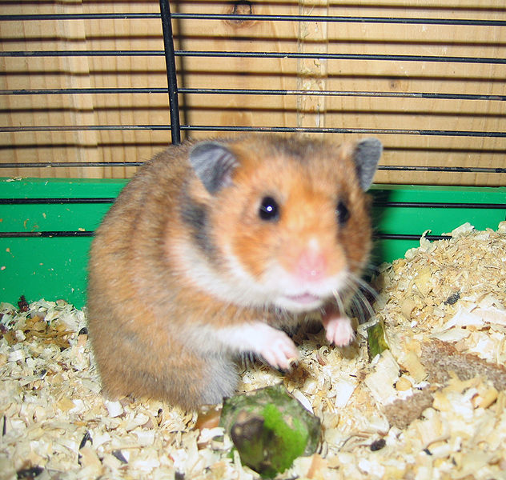

Хомяки
Хомяки (лат. Cricetinae) — подсемейство грызунов семейства хомяковых.
Дома обычно держат сирийских, джунгарских, хомяков кэмпбелла и роборовских хомяков. Сирийские хомяки отличаются наиболее разнообразным количеством окрасов, рисунков и типов шерсти. Длинношёрстных сирийских самцов очень часто ошибочно называют «ангорскими». Размеры сирийских хомяков могут достигать 18 см, масса — от 110—120 до 220 граммов и иногда даже больше. У представителей карликовых видов (мохноногих) густой мех покрывает не только тело, но и подошвы. Размеры зверьков не превышают 10 см в длину, тогда как масса редко превосходит 50 граммов. При выборе хомячка важно учитывать, что стайками живут только хомячки Роборовского, остальные же виды хомячков — одиночные. При содержании вместе сирийских хомячков, даже разнополых, возникают драки. Они могут привести к смерти более слабого из хомячков. При содержании разнополых сирийских, хомячков Кэмпбелла или джунгарских хомячков (даже из одного помета) вместе, самка будет рожать слишком часто, это серьезно навредит ее здоровью и сократит ее жизнь. Также беременная или родившая самка может убить или ранить самца, защищая детей. При вязке нужно обязательно учитывать, чтобы возраст обоих зверьков был более 4 месяцев и возраст самки не более 1 года для рожавшей и не более 9 месяцев для нерожавшей (иначе роды сильно навредят ее здоровью, у самки также может не появиться молоко для кормления хомячат, отсутствовать материнские инстинкты). Хомячков сводят на нейтральной территории или в клетке самца в день течки у самки. Беременность у сирийских хомячков длится 16—17 дней, у карликовых — 18—20 дней. Хомячат в возрасте 4 недель отсаживают от самки и разделяют на мальчиков и девочек, так как хомячата могут спариваться уже в этом возрасте. Отдают хомячат в возрасте 5-и недель. Клетка для хомячка должна быть не менее 50 на 30 см.(Этажность не важна) В клетке должно быть колесо со сплошной беговой поверхностью (от 18 см в диаметре для сирийских хомячков, от 14 см — для карликовых хомячков). В связи с различными мутациями, домашние хомячки отличаются разнообразием окрасов. Существуют даже длинношерстные и кудрявые (рексовые) хомячки.
В наших магазинах вы можете приобрести хомяков по цене от 26 гривен. Для детальной информацией созвонитесь с магазинами в вашем городе.
